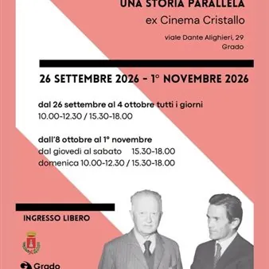

da sab 26 set a dom 4 ott
Biagio Marin e Pier Paolo Pasolini "Una Storia Parallela"
La mostra documentaria Biagio Marin e Pier Paolo Pasolini: Una storia parallela si tiene dal 26 settembre al 1° novembre 2026 presso l'ex Cinema Cristallo di Grado (Viale Dante Alighieri, 29)
 Indicazioni
Indicazioni
- Costi e prenotazioni
- Costo non indicato · Prenotazione non indicata
- Programma
- Programma da verificare. Apri la fonte ufficiale per orari e possibili aggiornamenti.
- In caso di maltempo
- Nessuna indicazione specifica pubblicata.
- Note
- Acquisito automaticamente dalla fonte.
L’EVENTO
Descrizione completa
Celebra il 40° anniversario della scomparsa di Biagio Marin e il 50° di quella di Pier Paolo Pasolini.
La mostra documentaria Biagio Marin e Pier Paolo Pasolini: Una storia parallela TgQPHd|||[["https://comune.grado.go.it/it/vivere-il-comune-22477/eventi-22479/biagio-marin-e-pier-paolo-pasolini-una-storia-parallela-173605",null,null,[null,null,null,null,null,null,null,null,null,null,null,null,null,null,null,[{"1218":[16,null,null,null,[1]]}]],16,null,"Biagio Marin e Pier Paolo Pasolini: una storia parallela","Descrizione. BIAGIO MARIN E PIER PAOLO PASOLINI: UNA STORIA PARALLELA. Una mostra per raccontare il rapporto tra Biagio Marin e Pier Paolo Pasolini con immagini in gran parte inedite e testi tratti dai diari di Biagio Marin e dalla corrispondenza epistolare tra i due intellettuali. Quest'anno, infatti, ricorre il quarantesimo anniversario della scomparsa del poeta gradese e il cinquantesimo di quella dell'intellettuale friulano. DAL 26 SETTEMBRE AL 1 ° NOVEMBRE 2026. ex Cinema Cristallo di Grado. (Viale Dante Alighieri, 29). MOSTRA VISITABILE. dal 26 settembre al 4 ottobre tutti i giorni 10.00-12.30 / 15.30-18.00. dall'8 ottobre al 1° novembre dal giovedì al sabato 15.30-18.00","https://encrypted-tbn1.gstatic.com/images?q\u003dtbn:ANd9GcTWFYK7lltWbghpRxUZ0gt_Ir0_y57ojaXZl5xG2x3z8GQ38B7S-zpnvTc4XbhAHdhpWeGQC6DtthYPPgU","Comune di Grado","https://encrypted-tbn0.gstatic.com/faviconV2?url\u003dhttps://comune.grado.go.it\u0026client\u003dAIM\u0026size\u003d128\u0026type\u003dFAVICON\u0026fallback_opts\u003dTYPE,SIZE,URL",[[1790243356086410,117635269,169773737],null,null,null,null,[[2,0,0,8]]],null,"24c618f7-6684-4308-89d0-6fafa99028d3"]] si tiene dal 26 settembre al 1° novembre 2026 TgQPHd|||[] presso l'ex Cinema Cristallo di Grado (Viale Dante Alighieri, 29).
Immagini inedite, testi dai diari di Marin e lettere dal carteggio tra i due poeti. Dal 26 settembre al 4 ottobre TgQPHd|||[] : Tutti i giorni dalle 10:00 alle 12:30 e dalle 15:30 alle 18:00. TgQPHd|||[] TgQPHd|||[] TgQPHd|||[] Dall'8 ottobre al 1° novembre TgQPHd|||[] : Da giovedì a sabato dalle 15:30 alle 18:00. Curatori TgQPHd|||[] : Massimo De Grassi e Pericle Camuffo.
IL PROGRAMMA
Programma e orari
Appuntamenti raccolti dalle fonti elencate. Dove manca un orario, non è ancora disponibile in questa scheda.
Programma pubblicato
- Dal 2026-09-26 al 2026-10-04
INFORMAZIONI UTILI
Prima di partire
- Controllare la fonte prima di partire.
ORGANIZZAZIONE